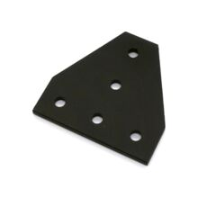

Соединительная пластина Openbuilds T-типа для профиля 2020, 5 отв.
МеханикаСоединительная пластина OpenBuilds T-типа — это алюминиевая монтажная пластина для соединения V-Slot/C-Beam профилей под прямым углом и усиления каркасов. Используется в CNC-станках, 3D-принтерах и других модульных конструкциях.
Это фирменная T-образная соединительная пластина OpenBuilds для стыковки линейных рельсов и профилей системы V-Slot. По официальному описанию она рассчитана на жёсткое перпендикулярное соединение и многовариантное крепление благодаря точной разметке отверстий. Пластина выполнена из анодированного алюминия 6105-T5, что даёт сочетание жёсткости и малой массы. Типовое применение — сборка рам, усиление узлов, крепление элементов в CNC, 3D-принтерах и автоматике. Для крепежа указана совместимость с винтами M5 и гайками Tee Nut M5. В каталоге OpenBuilds эта позиция проходит как T Joining Plate.